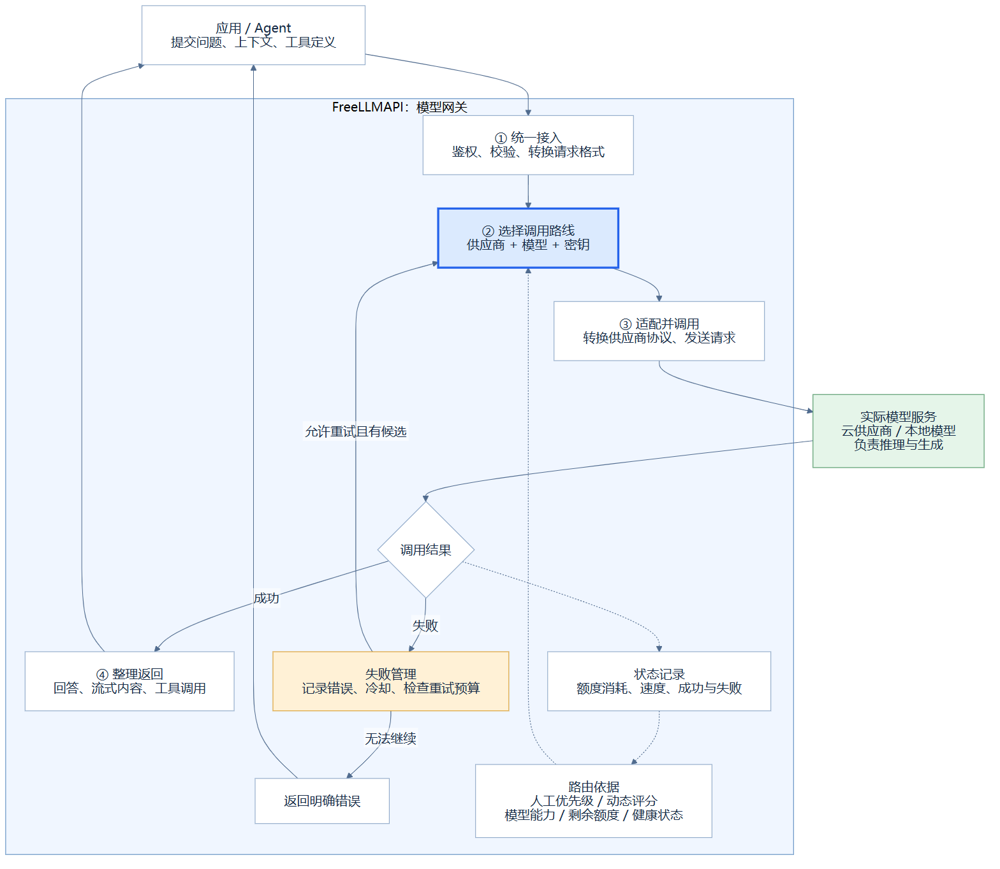

005 · FreeLLMAPI
FreeLLMAPI 是一个自托管模型网关。对外提供统一模型接口，对内选择“供应商 + 模型 + 密钥”路线、适配接口差异，并管理额度、冷却和失败回退。已有应用或 Agent 负责组织任务与执行工具，实际模型负责推理与生成。
返回总索引 · 网页展示 · 我们的理解 · 能力与场景 · 架构详解 · 同类产品 · 研究记录与来源
项目信息
| 字段 | 内容 |
|---|---|
| 研究索引 | 005 |
| 历史存储目录 | 008-freellmapi；索引与目录编号独立维护 |
| 上游 | tashfeenahmed/freellmapi |
| 研究版本 | 83562ad360a65d80b6319297fee4cd47dc5a2ff3，提交日期 2026-09-07 |
| 收录日期 | 2026-09-10 |
| 技术栈 | TypeScript、Node.js、Express、React / Vite、SQLite；Electron 桌面封装 |
| 上游许可证 | MIT 原文，Copyright (c) 2026 Tashfeen Ahmed |
| 研究状态 | 研究中：能力、架构和关键源码已整理；上游运行待复现 |
| 网页展示 | 中文理解、四种请求场景教学模拟、七个产品对比与完整研究页面已完成；正在发布与验证 |
能力摘要
我们的理解：对外是一套统一模型接口，对内是路由、适配和状态管理。 网关服务已有应用 / Agent；路由决定调用谁，适配处理怎么调用，真实模型负责推理，Agent 负责工具执行和任务验收。
- 统一接入： 提供 OpenAI 风格接口，并适配 Anthropic、Gemini 及可选的 Ollama 协议入口；具体能力受上游模型约束。
- 智能调度： 按模型能力与上下文筛选，再结合历史可靠性、速度、目录能力等级和额度余量排序。
- 额度与容错： 跟踪请求数、Token 和冷却状态；按错误类型重试并保留失败轨迹。
- 工具与多模态： 支持工具调用、结构化输出、向量及媒体接口；具备工具调用格式修复。
- 多模型融合：
fusion并行取得草稿后由模型综合，适合比较与草拟；不能保证事实正确。 - 本地管理： 管理密钥、模型链、会话与统计，支持自定义兼容端点、缓存和可选压缩。
完整能力边界、场景和扩展建议见能力与场景。
核心交互引导图

采用讨论中的核心交互图，非上游界面或实测截图。展示应用、网关与实际模型之间的调用和反馈；重试受输出提交状态、预算与候选可用性约束。矢量图 · Mermaid 原图 · 详细分层图
{kind=link}
{kind=link}
请求先经过统一接口与格式转换，筛选具备所需能力的模型，再由路由器选择供应商、模型和密钥。适配器调用上游，结果与错误被转换回客户端协议；额度账本和统计数据参与后续选择。管理界面、后台健康检查与签名目录更新负责维护配置和可用状态。
详细模块、数据流、评分公式、流式失败边界及源码入口见架构详解。
当前判断
对我们的价值是补充“模型供给与调度层”：与 LongHorizon-Harness 的任务编排、oh-my-pi 的执行工具形成研究上的互补。集成尚未实测。
免费额度具有波动性；调用成功不代表任务正确，切换模型也可能降低任务质量。适合个人实验、非紧急批处理及多模型评测；项目定位为单用户个人使用，不能直接当作有服务保障的团队生产平台。
阅读与运行
直接打开网页展示即可离线阅读和切换教学场景，无需账户、密钥或模型服务。网页包括核心交互、架构分层、FreeLLMAPI / LiteLLM / New API / Portkey / Bifrost / OpenRouter / Cloudflare 对照，以及完整文档阅读入口。
本地新增内容是研究展示，不是 FreeLLMAPI 管理台。 A、B 模型及四种结果为固定教学模拟，不是真实 API 日志。原有架构图为原创说明图，暂无上游真实运行截图。
本机预览（仓库根目录执行）：
python -m http.server 8145 --bind 127.0.0.1 --directory projects/008-freellmapi/app/dist
访问 http://127.0.0.1:8145/，只用于本机。已接入统一 GitHub Pages 清单，正在发布与验证。Sites 静态配置作为可选托管入口保留；当前环境未提供可调用的 Sites 发布工具，没有创建 Sites 项目。
文档同步与检查
understanding.md、capabilities.md、architecture.md、comparison.md、notes.md 和本 README 是阅读页内容源；首页产品表直接来自 comparison.md。修改后在仓库根目录运行：
python -m pip install -r projects/008-freellmapi/app/requirements.txt
python projects/008-freellmapi/app/build.py
node projects/008-freellmapi/app/check.cjs
网页样式和教学交互位于 app/dist/style.css、app/dist/app.js，首页结构位于 app/index.template.html，均随项目跟踪。生成的阅读页、图片和 Markdown 下载副本保留在 app/dist/；依赖仅属于本子项目。
未引入上游运行程序，也未配置密钥或调用模型。研究记录中的上游复现步骤尚未执行，不能将静态网页预览视为网关运行成功。
研究清单
- [x] 确认上游、固定提交与许可证
- [x] 整理能力、模块、请求流程与源码证据
- [x] 绘制原创架构图，记录场景与扩展建议
- [x] 同步根目录与项目索引，检查文档链接、编号和占位内容
- [x] 整理共同架构、产品差异与选型建议，提供本地中文网页展示
- [ ] 接入真实模型并验证流式输出、工具调用和故障切换
- [ ] 评测固定模型与自动路由的任务质量和成本
- [ ] 获取上游网关真实运行截图
来源与本地改动
本地新增内容为原创中文研究、架构图、教学网页及索引。上游能力、作者声明与我们的建议分别标注，FreeLLMAPI 源码链接固定到同一提交，同类产品引用官方文档。完整来源列于研究记录及同类产品。未复制上游程序代码或图片。